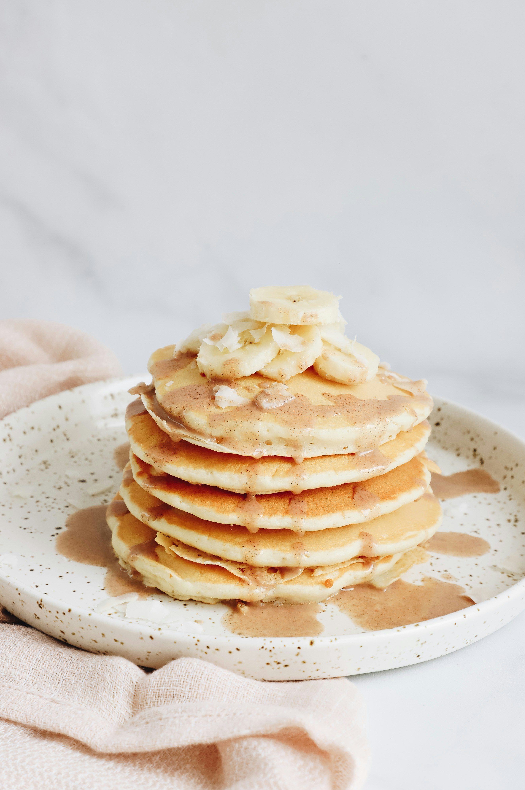

Home
Banana Pancakes

Photo by Kelsey Curtis on Unsplash
Fluffy banana pancakes made from scratch with mashed ripe bananas that are ready in minutes for a delicious twist on ordinary pancakes!
Wake up on the right side of the bed with a stack of sweet, cozy, and simple banana pancakes. This top-rated banana pancake recipe is easy to make and it comes together in just 15 minutes, so you don't have to wake up early to enjoy a satisfying breakfast. Learn how to make, store, and serve the best banana pancakes ever.
Ingredients:
- 1 cup all-purpose flour
- 1 tablespoon white sugar
- 2 teaspoons baking powder
- 1/4 teaspoon salt
- 1 egg, beaten
- 1 cup milk
- 2 tablespoons vegetable oil
- 2 ripe bananas, mashed
Steps:
- Gather all the ingredients
- Combine the dry ingredients of flour, white sugar, baking powder, and salt in a bowl
- In a separate bowl combine the wet ingredients of egg, milk, vegetable oil, and bananas
- pour the contents of the dry ingredient flour mixture bowl into the wet ingredients banana mixture bowl and fold with a spatula to combine. The batter will be slightly lumpy.
- Heat a lightly oiled griddle or frying pan over medium heat. Pour or scoop the batter onto the griddle using about 1/4 cup of batter for each pancake
- Cook pancakes until they are golden brown on each side, about 3 to 5 minutes per side.
- Serve hot and enjoy!
Recipe adapted from allrecipes